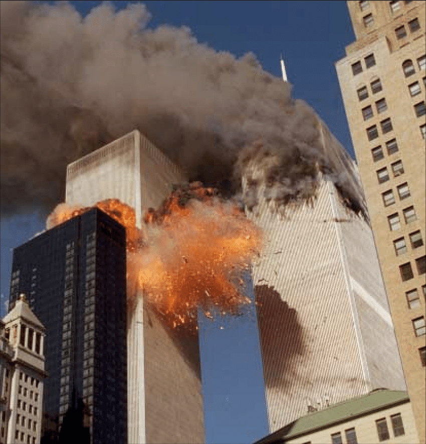
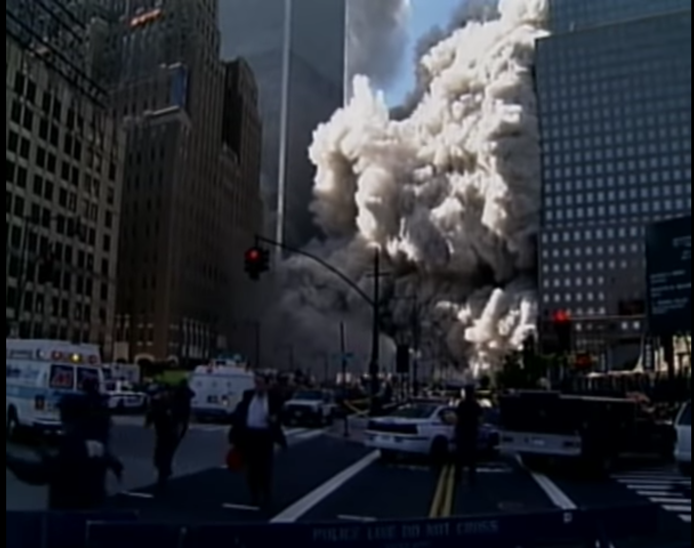

The morning of Monday September 10, 2001 New York City was covered in a warm blanket of sunlight. It appeared to be the perfect day for sightseeing and exploring all that Lower Manhattan had to offer. The statue of liberty could be seen in the distance and the city hall park was bustling as usual. But for one of the 50,000 employees of the World Trade Center it was just another normal day (“World Trade Center”). Stanley Praimnath who worked as the assistant vice president for Fuji Bank had spent the last five years of his life climbing the corporate ladder to acquire his position and seat on the 81st floor of the South Tower. Stanley was a Guyana immigrant who started a new life in America and was now living his American dream. He found comfort in Christianity and was happily married to a pastor's daughter. He finally achieved stability in his life that he ever so longed for (Ellis).
By late afternoon, clouds could be seen approaching Stanley’s office. A cold front swept through New York and had brought rain and thunderstorms along with. It was a drastic change in weather that was brought forth by the looming hurricane Erin. But as quickly as the storm appeared, it had passed. By 6:45 PM skies had cleared and no trace of the storm could be seen (Frydlewicz, “September 10”). It was a momentary hiccup in Satnely’s blissful life.
The following morning of Tuesday September 11, Stanley was riding up the elevator to his office. It was a quiet and peaceful morning. The sky was filled with an endless sea of blue without a cloud in sight. All that remained from the previous night’s storm was a small northwestern breeze (Frydlewicz, September 11”; Carlson). Stanily patiently waited in silence as the elevator approached the 81st floor. By 8:45 AM he began receiving phone calls from family asking if he was alright. He quickly assured them that he was alright. Though confused by the sudden barrage of phone calls, each with no explanation, Stanley continued to his office. When he finally arrived, Stanely set down his briefcase and sat in his chair. He happened to peer out his personal window which had a direct view of the North Tower. In his horror, he could see the North Tower covered in smoke with debris were falling to the ground. It appeared to be a bombing, perhaps similar to what happened to the World Trade Center in 1993. Fearful that the South Tower would also be targeted, Stanley hurried back to the elevator and headed down to the lobby.
Stanley, among others who were still not fully aware of the severity of the situation arrived at the turnstile exit in the lobby. As he was about to evacuate the building a security guard stopped and convinced him that the South Tower was secure and he should go back to work. Stanley hesitantly complied and started towards the express elevator. Soon afterwards, a familiar voice over the building’s intercom expressed a similar message, “Your attention please, ladies and gentlemen, Building 2 is secure. There is no need to evacuate Building 2 (Ellis).” Feeling comfort in those words, Stanley hopped aboard the express elevator and arrived back to his office. During the short ride back to his office, Stanley laughed and exchanged pleasantries with co-workers that happened to take the same elevator. It was a little after 9 AM when he parted from them and finally arrived back on the 81st floor. The sound of an office phone ringing could be heard as he walked into his office. An acquaintance from Chicago was on the line desperately urging Stanley to leave the building. Stanley, still unaware that the damage to the North Tower was caused by a plane crash, tried his best to reassure the woman that everything was alright.
While talking to the woman, Stanley stood up and looked out the window, his gaze fixed in the direction of the Statue of Liberty. His sight narrowed on a large plane, at eye level, rapidly approaching his office. As the plane got closer, an intense revving sound could be heard. Similar to the ”sound a plane makes when it’s about to take off (Ellis).” Reflexes took over as he quickly dove under his desk. At that moment the plane collided with the building and one of its wings sliced through the roof of his office. The wing was lodged “in his office door 20 feet away from where he huddled (Ellis).” After the deafening sound of an explosion subsided the room went dark and most of the floor was reduced to rubble. The sprinkler systems were activated and smoke began filling the room. The plane’s wing had caught fire and electrical wires were short circuiting. The only thing that remain in tact was Stanley himself.
Though covered in small cuts and bruises, he was in relatively good condition. He frantically cleared the surrounding debris to make space to move. It was impossible to stand up due to the partially collapsed roof, so he crawled along the floor looking for a way out. Stanley screamed for help, but felt his cries falling on def ears. It was unlikely that anyone near him survived the impact so he continued moving. While clearing rubble, a flashlight lying on the ground came into sight on the other side of the room. He crawled towards the light while continuing his pleads for help. Stanley “crawled through the load department into the lounge into the computer room, into the communications room” until he could not go any further. The total distance he crawled was comparable to a small city block. He had reached a wall near the end of the room and was becoming short of breath. The smoke was filling his lungs making it hard to breathe. He cried for help once more and this time there was a response. A man’s voice could be heard, “Knock on the wall, knock on the wall and I'll know where you are (Lipton).”
Stanley crawled to the wall and pounded on it as instructed. The man said that he heard Stanley’s cries and came to help. There was a small opening above the wall that allowed for communication. He urged Stanley to try and dive over the wall and that he would catch him on the other side. Stanley contemplated his options and came to the conclusion that it was the only way past the wall. Though warn out and afraid, he attempted the jump. He didn’t make it all the way over and part of the ceiling caved in on them. Stanley raised his hands up to brace himself as the ceiling fell. Pain filled his body as he let out a cry of agony. Two metal screws sticking through a plank had pierced one of his hands. The two of them were still separated by the wall and now the small passage over the wall was impassible. Stanley grit his teeth and pried the plank away with his good hand. Stanley, now gasping for air, felt the end was near, so he prayed to God for strength.
He knew this would be his only chance of survival so he began punching the wall with his only good hand with everything he had. His fist went straight through the slab drywall and out the other side. He didn’t let up his relentless assault on the wall until he could fit his head and shoulders through the hole. He stuck his upper body through and, with the assistance of the man on the other side, dove through the wall. Time was of the essence so he quickly regained his composure and graciously thanked the man who saved him. The man identified himself as Brian Clark of the 83rd floor and the two of them got up and made their way towards the nearest stairwell, stairwell A.
Although Stanley was never able to reach the flashlight he saw, Brian was the designated fire marshal on his floor and always kept a flashlight on hand (Kolker). Brian used his flashlight to illuminate the dark passage and the two of them began their decent. The stairwell located in the outskirts of the room stood miraculously intact. Compared to the rest of the building, which appeared to be in disarray, the stairwell was neither filled with debris nor damaged. The smoke thinned and their progress towards the exit was quickening. By the 76th floor, “lights were on and the air was fresh (Desnoyers).” Although things were looking brighter, they experienced many horrifying sights on the way down. “One man lay there with a broken back, bleeding from massive head injuries. ‘Please tell my wife and baby I love them. We just got married (Ellis).’” On the 44th floor a security guard was tending to another man’s wounds. They offered to carry the man down, but the security guard declined, believing that paramedics would soon arrive. On the 31st floor the electricity was on and telephones were working. They stopped to call their families, and notify 911 that there was a person in need of help on the 44th floor. Stanley was unable to reach his wife and the 911 operators kept transferring their call or putting them on hold. After struggling for some time, they decided it was best to evacuate the building and made their final descent. They hurried past firefighters and first responders and made their way down to the lobby. The lobby was filled with chaos as officials were shouting orders and directing people out of the building.
It was nearly 10:00 AM by the time they reached the outside, a nearly hour long descent had come to an end. They sprinted three blocks South towards the Trinity Church away from both towers. Large shards of glass and debris were raining from the sky and thuds from jumpers hitting the ground could be heard. Unbelievably, neither of the two men were struck by the falling debris. Only after reaching their destination did they stop and look back at the burning towers. The once blue sky was tainted by the soaring gray smoke. The sound of sirens and cries of agony filled the air. As they stood there watching, Stanley noted the ground emitting a strange vibration and said to Brian, it felt like the tower was on the verge of collapsing. In the middle of Brian’s rebuttal, stating that it was a steel structure and it would not fall, the South tower fell. At 10:05 AM, Only five minutes after they had escaped the tower, it had crumbled ("September 11: Chronology of Terror."). The two of them once again ran away from the towers as a cloud of smoke and dust swept through the streets. They were separated due to the thick dust but had retreated out of the danger zone. Later Stanley was able to contact his hysterical wife, who was convinced he had died in the tower, and put her at ease (Kolker). Within a matter of seconds, Stanley’s life turned upside down, but with quick decision making and a little luck he was able to survive the impact zone.
Retracing the steps taken by Stanley, the most considerable decision he made was taking Stairwell A down. It was an arbitrary decision that saved both his and Brian’s life. The tower contained three stairwells, A, B and C respectively. All three of them were generally located near the center of the building and were in close proximity to each other, at some points only 30 feet apart. Most people at or above the impact zone had tried to escape through stairwells B or C and were met with an impassible rubble induced dead end or evacuated to the roof to wait for a helicopter that would never come. The only way down from the floors above the 80th was through stairwell A. A closer look at the architecture of the South Tower reveals why stairwell A was unharmed and B and C were destroyed.
The jet that struck the southeast side of the South Tower penetrated the core of the building on the 78th through 84th floors. Normally, all of the tower’s elevators and stairwells would have been located in the middle of the building and destroyed on impact, but the unique design of the 82nd floor prevented that from happening. On the 82nd floor, stairwell A had been routed to the northwest side of the tower, opposite the point of impact, to make room for the large elevator machines located in the center of the 81st floor (Desnoyers). Stanley, who was on the 81st floor, luckily chose to descend the stairwell furthest away from the impact zone. Even if he doubled back to stairwell A after attempting to descend through B or C, it is unlikely that he would have made it out of the building in time.